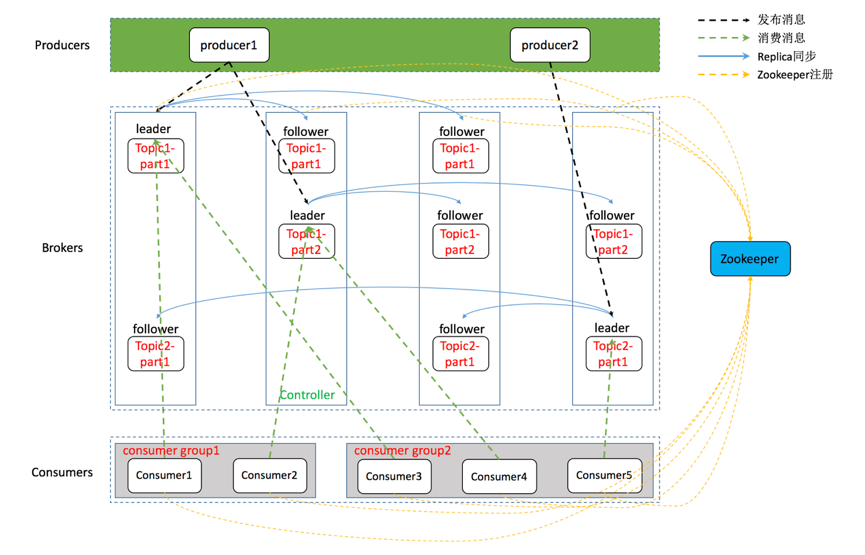
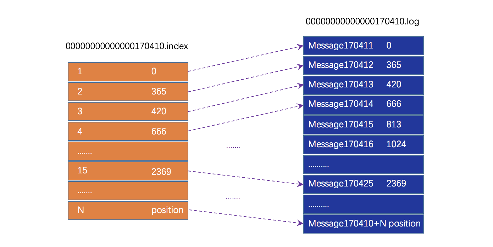
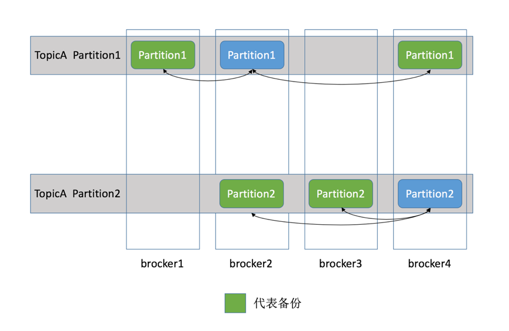
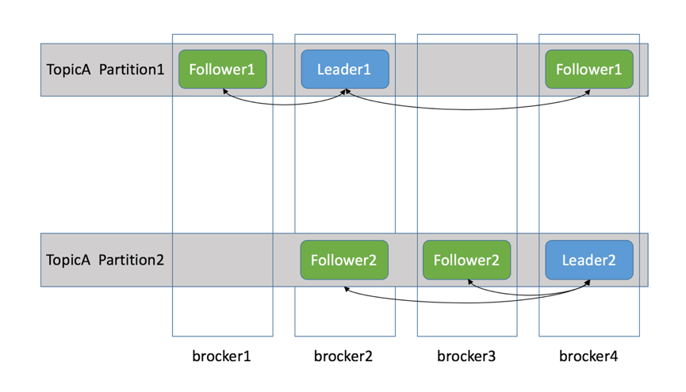

- 01 开篇词：从中间件开始学习分布式.md.html
- 02 走进分布式中间件（课前必读）.md.html
- 03 主流分布式缓存方案的解读及比较.md.html
- 04 分布式一致性协议 Gossip 和 Redis 集群原理解析.md.html
- 05 基于 Redis 的分布式缓存实现及加固策略.md.html
- 06 Redis 实际应用中的异常场景及其根因分析和解决方案.md.html
- 07 Redis-Cluster 故障倒换调优原理分析.md.html
- 08 基于 Redis 的分布式锁实现及其踩坑案例.md.html
- 09 分布式一致性算法 Raft 和 Etcd 原理解析.md.html
- 10 基于 Etcd 的分布式锁实现原理及方案.md.html
- 11 主流的分布式消息队列方案解读及比较.md.html
- 12 搭建基于 Kafka 和 ZooKeeper 的分布式消息队列.md.html
- 13 深入解读基于 Kafka 和 ZooKeeper 的分布式消息队列原理.md.html
- 14 深入浅出解读 Kafka 的可靠性机制.md.html
13 深入解读基于 Kafka 和 ZooKeeper 的分布式消息队列原理
分布式消息队列是互联网领域广泛应用的中间件，在上一课中，我已经介绍了基于 Kafka、ZooKeeper 的分布式消息队列系统的搭建步骤，以及 Java 客户端的使用方法。
对于商业级消息中间件来说，可靠性至关重要，那么，Kafka 是如何确保消息生产、传输、存储及消费过程中的可靠性的呢？本文将从 Kafka 的架构切入，解读 Kafka 基本原理，并对其存储机制、复制原理、同步原理、可靠性和持久性等作详细解读。
1. Kafka 总体架构
基于 Kafka、ZooKeeper 的分布式消息队列系统总体架构如下图所示：
典型的 Kafka 体系架构包括若干 Producer（消息生产者），若干 Broker（作为 Kafka 节点的服务器），若干 Consumer （Group），以及一个 ZooKeeper 集群。
Kafka 通过 ZooKeeper 管理集群配置、选举 Leader，并在 Consumer Group 发生变化时进行 Rebalance（即消费者负载均衡，在下一课介绍）。Producer 使用 Push（推）模式将消息发布到 Broker，Consumer 使用 Pull（拉）模式从 Broker 订阅并消费消息。
上图仅描摹了总体架构，并没有对作为 Kafka 节点的 Broker 进行深入刻画。事实上，它的内部细节相当复杂，如下图所示，Kafka 节点涉及 Topic、Partition 两个重要概念。

在 Kafka 架构中，有几个术语需要了解下。
- Producer： 生产者，即消息发送者，Push 消息到 Kafka 集群的 Broker（就是 Server）中；
- Broker： Kafka 集群由多个 Kafka 实例（Server）组成，每个实例构成一个 Broker，其实就是服务器；
- Topic： Producer 向 Kafka 集群 Push 的消息会被归于某一类别，即 Topic。本质上，这只是一个逻辑概念，面向的对象是 Producer 和 Consumer，Producer 只需关注将消息 Push 到哪一个 Topic 中，而 Consumer 只需关心自己订阅了哪个 Topic；
- Partition： 每个 Topic 又被分为多个 Partition，即物理分区。出于负载均衡的考虑，同一个 Topic 的 Partition 分别存储于 Kafka 集群的多个 Broker 上。而为了提高可靠性，这些 Partition 可以由 Kafka 机制中的 Replicas 来设置备份的数量。如上面框架图所示，每个 Partition 都存在两个备份；
- Consumer： 消费者，从 Kafka 集群的 Broker 中 Pull 消息、消费消息；
- Consumer Group： High-Level Consumer API 中，每个 Consumer 都属于一个 Consumer Group，每条消息只能被 Consumer Group 中的一个 Consumer 消费，但可以被多个 Consumer Group 消费；
- Replicas： Partition 的副本，保障 Partition 的高可用；
- Leader： Replicas 中的一个角色， Producer 和 Consumer 只与 Leader 交互；
- Follower： Replicas 中的一个角色，从 Leader 中复制数据，作为它的副本，同时一旦某 Leader 挂掉，便会从它的所有 Follower 中选举出一个新的 Leader 继续提供服务；
- Controller： Kafka 集群中的一个服务器，用来进行 Leader Election 以及各种 Fail Over；
- Zookeeper： Kafka 通过 ZooKeeper 存储集群的 Meta 信息等，文中将详述。
1.1 Topic & Partition
为了便于区分消息，Producer 向 Kafka 集群 Push 的消息会被归于某一类别，即 Topic。为了负载均衡、增强可扩展性，Topic 又被分为多个 Partition。从存储层面来看，每一个 Partition 都是一个有序的、不可变的记录序列，通俗点就是一个追加日志（Append Log）文件。每个 Partition 中的记录都会被分配一个称为偏移量（Offset）的序列 ID 号，该序列 ID 号唯一地标识 Partition 内的每个记录。
Kafka 机制中，Producer Push 的消息是追加（Append）到 Partition 中的，这是一种顺序写磁盘的机制，效率远高于随机写内存，如下图所示：
（来源：Kafka 官网）
1.2 Kafka 为什么要将 Topic 分区？
简而言之：负载均衡 + 水平扩展。
前已述及，Topic 只是逻辑概念，面向的是 Producer 和 Consumer，而 Partition 则是物理概念。可以想象，如果 Topic 不进行分区，而将 Topic 内的消息存储于一个 Broker，那么该 Topic 的所有读写请求都将由这个 Broker 处理，吞吐量很容易陷入瓶颈，这显然不适合高吞吐量应用场景。
有了 Partition 概念，假设一个 Topic 被分为 10 个 Partition，Kafka 会根据一定的算法将 10 个 Partition 尽可能均匀地分布到不同的 Broker（服务器）上。当 Producer 发布消息时，Producer 客户端可以采用 Random、Key-Hash 及轮询等算法选定目标 Partition。若不指定，Kafka 也将根据一定算法将其置于某一分区上。Partiton 机制可以极大地提高吞吐量，并且使系统具备良好的水平扩展能力。
那么，如何指定 Partition 的数量呢？通常有两种方式。
- 通过 Kafka 的配置文件指定
Kafka Server 的配置文件 $KAFKA_HOME/config/server.properties 中有一个参数 num.partitions，该参数用来指定 Partition 的数量，如下所示：
# The default number of log partitions per topic. More partitions allow greater
# parallelism for consumption, but this will also result in more files across
# the brokers.
# 这个参数默认是1，在实际应用中可自行配置
num.partitions=1
- 创建 Topic 时动态指定
在上一课《搭建基于 Kafka 和 ZooKeeper 的分布式消息队列》中，我详细介绍过该方法，这里，我再举一个例子，命令形式如下（当然，通过客户端调用接口也是可以的）：
# 创建Topic
./kafka-topics.sh --create --zookeeper 192.168.7.100:12181 --replication-factor 2 --partitions 3 --topic mytopic
# 解释
--replication-factor 2 #副本数为2
--partitions 3 #创建3个分区
--topic mytopic #主题名为mytopic
2. Kafka 高可靠性实现基础解读
谈及可靠性，最常规、最有效的策略就是“副本（Replication）机制”，Kafka 实现高可靠性同样采用了该策略。通过调节副本相关参数，可使 Kafka 在性能和可靠性之间取得平衡。本节先从 Kafka 文件存储机制入手，从最底层了解 Kafka 的存储细节，进而对消息的存储有个微观的认知。之后通过介绍 Kafka 的复制原理和同步方式来阐述宏观层面的概念。最后介绍 ISR、HW 和 Leader 选举。
2.1 Kafka 文件存储机制
上文已经介绍了 Topic 和 Partition。事实上，Partition 并不是最终的存储粒度，Partition 还可以进一步细分为 Segment。换言之，一个 Partition 物理上由多个 Segment 组成，Segment 才是实际的存储粒度。
为了直观地展现 Partition 的构成，我结合一个实例加以说明。基于第11课《搭建基于 Kafka 和 ZooKeeper 的分布式消息队列》的内容，我们可以轻松地搭建一个“单机（只有一个 Broker）” 消息队列。消息队列搭建好后，通过命令创建一个 Topic，名为“mytopic_test”，Partition 的数量配置为 4（创建 Topic 的命令请见上一课）。之后，可以在 Kafka 日志目录（由 Kafka Server 配置文件 server.properties 中的参数 log.dirs 指定）中看到新生成的文件夹，如下所示：
drwxr-xr-x 2 root root 4096 Oct 15 13:21 mytopic_test-0
drwxr-xr-x 2 root root 4096 Oct 15 13:21 mytopic_test-1
drwxr-xr-x 2 root root 4096 Oct 15 13:21 mytopic_test-2
drwxr-xr-x 2 root root 4096 Oct 15 13:21 mytopic_test-3
通过以上命令，我们创建了一个 名为“mytopic_test”的 Topic，同时为它指定了 4 个 Partition，也就是上面的 4 个文件夹（由于 Partition 不是最终的存储粒度，所以是文件夹而不是文件）。Partition 的名称规则为：Topic 名称+索引号，索引的范围为：[0，num.partitions - 1]。
在初步了解了 Kafka 的文件存储机制后，不知读者是否思考过如下几个问题。
问题1：为什么不能以 Partition 作为存储单位？
任何一个 Topic 中的 Partition 数量受限于 Kafka Broker 的数量，不可能太多。如果以 Partition 为存储粒度，随着消息源源不断写入，数量有限的 Partition 将急剧扩张，会对消息文件的维护以及对已消费消息的清理工作带来严重影响。
Partition 的数量为什么受限于 Kafka Broker 的数量？为了保证可靠性，每个 Partition 都应有若干个副本（Replica），其中一个 Replica 为 Leader，其它都为 Follower。Leader 负责处理 Partition 的所有读写请求，Follower 则负责被动地复制 Leader 上的数据。不难理解，对于任意一个 Topic，有多少个 Partition 就有多少个 Leader，并且，这些 Leader 应尽量分散到不同的 Broker 上，否则，一旦某台 Broker（如果它部署有大量 Leader）故障下线，势必引起连锁反应：大量的 Partition 需要重选 Leader，而这期间是不可用的。
鉴于上述原因，有必要对 Partition 进一步细分，细分的单位就是 Segment。很容易理解，一个 Partition（文件夹）相当于一个巨大的文件，通过细分，被切分为多个大小相等的 Segment 文件，但由于消息大小不同，每个 Segment 中的消息数量通常是不同的。基于 Segment 机制，可以很方便地清理那些陈旧的消息（已被消费的消息），从而提高磁盘的利用率。关于 Segment，Kafka Server 有如下配置参数：
log.segment.bytes=1073741824 #指定segment文件的大小，因为kafka的消息是以追加的形式落地到文件，当超过这个值的时候，kafka会新起一个文件；
log.retention.hours=168 #默认消息的最大持久化时间，168小时，7天；
log.retention.check.interval.ms=300000 #每隔300000毫秒去检查上面配置的log失效时间（log.retention.hours=168 ），到目录查看是否有过期的消息，如果有则删除过期消息；
log.cleaner.enable=false #是否启用log压缩，一般不用启用，启用的话可以提高性能；
问题2：Segment 的工作原理是什么？
上文已经介绍过，Partition 的细分单位为 Segment，接下来我们看下它的工作原理。打开一个 Partition 文件夹（目录），如下所示：
00000000000000000000.index
00000000000000000000.log
00000000000000170410.index
00000000000000170410.log
00000000000000239430.index
00000000000000239430.log
并没有发现“Segment”文件！事实上，Segment 文件由两部分组成，即 .index 文件和 .log 文件，分别为 Segment 索引文件和数据文件。观察上面的文件名，很容易理解它们的命规则，对于索引文件，Partition 全局的第一个 Segment 从 0 开始，后续每个 Segment 文件名为上一个 Segment 文件最后一条消息的偏移量（Offset）值，Offset 的数值由 20 位数字字符表示，没有数字的位置用 0 填充。对于数据文件，其命名与对应的索引文件保持一致即可。
为了便于读者理解，以上面的其中一“对” Segment 文件为例：00000000000000170410.index 和 00000000000000170410.log，绘制其关系图，如下所示：

.index 文件作为索引文件，存储的是元数据；.log 文件作为数据文件，存储的是消息。如何通过索引访问具体的消息呢？事实上，索引文件中的元数据指向的是对应数据文件中消息的物理偏移地址，有了消息的物理地址，自然也就可以访问对应的消息了。
其中以 .index 索引文件中的元数据 [2, 365] 为例，在 .log 数据文件表示第 2 个消息，即在全局 Partition 中表示 170410+2=170412 个消息，该消息的物理偏移地址为 365。
问题3：如何从 Partition 中通过 Offset 查找 Message？
基于问题 2 中的数据和图形，如何读取 offset=170425 的 Message（消息）呢？关键在于通过 Offset 定位出消息的物理偏移地址。首先，列出各个 Segment 的索引文件及其偏移量范围，如下：
索引文件1：00000000000000000000.index，偏移量范围：[0，170410]；
索引文件2：00000000000000170410.index，偏移量范围：[170410+1，239430]；
索引文件3：00000000000000239430.index，偏移量范围：[239430+1，239430+1+X]，X大于1，具体值与消息量和大小有关；
根据索引文件的偏移量范围，170410< offset=170425 <239430，因此，Offset=170425 对应的索引文件为 00000000000000170410.index。索引文件是“有序的”，通过二分查找（又称折半查找）便可快速定位具体文件位置。此后，根据 00000000000000170410.index 文件中的 [15,2369] 定位到数据文件 00000000000000170410.log 中的 2369 位置，这便是目标消息的位置，读取即可。
问题4：读取一条消息时，如何确定何时读完本条消息呢？
通过对问题 3 的解答，相信读者已经理解了如何根据 Offset 定位一条消息的物理偏移地址。但这个物理偏移地址实际上是一个起始地址，如何确定本条消息的结尾（终止地址）呢？
这个问题可通过消息在磁盘上的物理存储结构来解决（其中包含偏移量、消息体长度等可度量消息终止地址的数据），消息的存储结构如下（取自官网）：
baseOffset: int64 #偏移量
batchLength: int32 #消息体长度
partitionLeaderEpoch: int32
magic: int8 (current magic value is 2)
crc: int32
attributes: int16
bit 0~2:
0: no compression
1: gzip
2: snappy
3: lz4
bit 3: timestampType
bit 4: isTransactional (0 means not transactional)
bit 5: isControlBatch (0 means not a control batch)
bit 6~15: unused
lastOffsetDelta: int32
firstTimestamp: int64
maxTimestamp: int64
producerId: int64
producerEpoch: int16
baseSequence: int32
records: [Record]
2.2 复制原理和同步方式
副本机制初探
提高可用性，冗余设计（也称副本机制）是常用的策略，Kafka 也不例外。在 Kafka 中，副本是以 Partition 为单位，换言之，每个 Partition 有 N 个副本（Replica），副本数量可在 Kafka 配置文件 server.properties 中设置：
default.replication.factor=2 #复制因子，默认值为2，如果一个副本失效了，另一个还可以继续提供服务，从而保证可用性。
基于多副本机制，Kafka 可实现故障自动转移（Fail Over）。副本根据角色的不同可分为以下三类。
- Leader 副本：响应 Client 端读写请求的副本，Producer 和 Consumer 只跟 Leader 交互；
- Follower 副本：被动地备份 Leader 副本中的数据，不能响应 Client 端读写请求。一旦 Leader 挂掉，会从它的 Follower 中选举出一个新的 Leader 继续提供服务；
- ISR 副本：包含了 Leader 副本和所有与 Leader 副本保持同步的 Follower 副本。如何判定是否与 Leader 同步，后面详述。
为了便于读者更好地理解副本概念，我们看下面这个例子。
一个具有 4 个 Broker 的 Kafka 集群，TopicA 有 3 个 Partition，每个 Partition 有 3 个副本（Leader+Follower）。
如果 Leader 所在的 Broker 发生故障或宕机，对应 Partition 将因无 Leader 而不能处理客户端请求，这时副本的作用就体现出来了：一个新 Leader 将从 Follower 中被选举出来并继续处理客户端的请求。
如何确保新选举出的 Leader 是最优秀的？
一个 Partition 有多个副本（Replica），为了提高可靠性，这些副本分散在不同的 Broker 上。由于带宽、读写性能、网络延迟等因素，同一时刻，这些副本的状态通常是不一致的，即 Follower 与 Leader 的状态不一致。那么，如何保证新 Leader 是优选出来的呢？
Kafka 机制中，Leader 将负责维护和跟踪一个 ISR（In-Sync Replicas）列表，即同步副本队列，这个列表里面的副本与 Leader 保持同步，状态一致。如果新的 Leader 从 ISR 列表里的副本中选出，那么就可以保证新 Leader 是优秀的。当然，这不是唯一的策略，下文将继续解读。
2.3 同步副本 ISR
上节中讲到了同步副本队列 ISR（In-Sync Replicas），即 Leader 副本 + 所有与 Leader 副本保持同步的 Follower 副本。虽然副本可以提高可用性，但副本数量对 Kafka 的吞吐率有一定影响。默认情况下 Kafka 的 Replica 数量为 2（部分 Kafka 版本默认值为 1），即每个 Partition 都有一个 Leader，一个 Follower。所有的副本（Replica）统称为 Assigned Replicas（AR）。显然，ISR 是 AR 中的一个子集，由 Leader 维护 ISR 列表，Follower 从 Leader 那里同步数据会有一些延迟（由参数 replica.lag.time.max.ms 设置超时阈值），超过阈值的 Follower 将被剔除出 ISR， 存入 OSR（Outof-Sync Replicas）列表，新加入的 Follower 也会先存放在 OSR 中，即有关系式 AR=ISR+OSR。
LEO & HW
前面提到 Kafka 中，Topic 的每个 Partition 可能有多个副本（Replica）用于实现冗余，从而实现高可用。每个副本又有两个重要的属性 LEO 和 HW。
通过前面内容的学习，我们知道在 Kafka 的存储机制中，Partition 可以细分为 Segment，而 Segment 是最终的存储粒度。不过，对于上层应用来说，仍然可以将 Partition 看作最小的存储单元，即 Partition 可以看作是由一系列的 Segment 组成的粒度更粗的存储单元，它由一系列有序的消息组成，这些消息被连续的追加到 Partition 中。
LEO、HW 以及 Offset 的关系图如下：
- LEO：即日志末端位移（Log End Offset），表示每个副本的 Log 最后一条 Message 的位置。比如 LEO=10、HW=7，则表示该副本保存了 10 条消息，而后面 3 条处于 Uncommitted 状态。
- HW：即水位值（High Watermark）。对于同一个副本而言，其 HW 值不大于 LEO 值。小于等于 HW 值的所有消息都被认为是“已备份”的（Replicated），对于任何一个 Partition，取其对应的 ISR 中最小的 LEO 作为 HW，Consumer 最多只能消费到 HW 所在的位置。
此外，需要说明的是，每个 Replica （包含 Leader 和 Follower）都有 HW，它们各自负责更新自己的 HW 的状态。
注：HW 并不是 Kafka 特有的概念，HW 通常被用在流式处理领域（比如 Apache Flink、Apache Spark 等），以表征元素或事件在时间层面上的进度。在 Kafka 中，对于 Leader 新写入的消息，Leader 会等待该消息被 ISR 中所有的 Replica 同步后再更新 HW，之后该消息才能被 Consumer 消费。这种机制有一个好处，确保 HW 及其之前的消息（Committed 状态）都是已备份的，即便 Leader 所在的 Broker 因故障下线，那么 Committed 状态的消息仍然可以从新选举出的 Leader 中获取。
下面我们举例说明。
某个 Partition 的 ISR 列表包括 3 个副本（1 个 Leader+2 个 Follower），当 Producer 向其 Leader 写入一条消息后，HW 和 LEO 有如下变化过程：
由上图可以看出，Kafka 的复制机制既不是完全的同步复制，也不是单纯的异步复制。同步复制要求所有能工作的 Follower 都复制完，这条消息才会被置为 Committed 状态，该复制方式受限于复制最慢的 Follower，会极大地影响吞吐率，因而极少应用于生产环境。而异步复制方式下，Follower 异步地从 Leader 复制数据，数据只要被 Leader 写入 Log 就被认为已经 Committed（类似 Redis，主从异步复制）。如果在 Follower 尚未复制完成的情况下，Leader 宕机，则必然导致数据丢失，很多时候，这是不可接受的。
相较于完全同步复制和异步复制，Kafka 使用 ISR 的策略则是一种较“中庸”的策略，在可靠性和吞吐率方面取得了较好的平衡。某种意义上，ISR 策略与第 8 课中介绍的 Raft 算法所采用的“多数派原则”类似，不过 ISR 更为灵活。
2.4 Kafka 消息生产的可靠性
就 Kafka 而言，可靠性贯穿消息的生产、发送、存储及消费等过程，本节将介绍消息生产过程中的可靠性，即当 Producer 向 Leader 发送消息时的可靠性，在客户端，可以通过 request.required.acks 参数来设置数据可靠性的级别。
（1）request.required.acks = 1
这是默认情况，即消息的强制备份数量为 1，Producer 发送数据到 Leader，只要 Leader 成功写入本地日志，即成功返回客户端，不要求 ISR 中的其它副本与 Leader 保持同步。对于 Producer 发来的消息，如果 Leader 刚写入并成功返回后便宕机，此次发送的消息就会丢失。
（2）request.required.acks = 0
即消息的强制备份数量为 0，Producer 不停向 Leader 发送数据，而不需要 Leader 反馈成功消息，这种情况下数据传输效率最高，与此同时，可靠性也是最低的。可能在发送过程中丢失数据，可能在 Leader 宕机时丢失数据。
（3）request.required.acks = -1（all）
即消息的强制备份数量为 ISR 列表中副本的数量，Producer 发送数据给 Leader，Leader 收到数据后要等到 ISR 列表中的所有副本都完成数据同步后（强一致性），才向生产者返回成功消息。如果一直收不到成功消息，则认为发送数据失败会自动重发数据。这是可靠性最高的方案，当然，性能也会受到一定影响。
单纯设置 request.required.acks 保障不了消息生产的可靠性
回顾之前讲得，由于 Follower 从 Leader 同步数据有一些延迟（由参数 replica.lag.time.max.ms 设置超时阈值），超过阈值的 Follower 将被剔除出 ISR， 存入 OSR（Outof-Sync Replicas）列表，因此，ISR 列表实际上是动态变化的。
我们思考一个问题。由于 ISR 列表是动态变化的，如果 ISR 中的副本因网络延迟等原因被踢出，只剩下 Leader，即便设置参数 request.required.acks=-1 也无法保证可靠性。鉴于此，需要对 ISR 列表的最小副本数加以约束，即 ISR 列表中的副本数不得小于一个阈值。Kafka 提供了这样一个参数：min.insync.replicas，该参数用于设定 ISR 中的最小副本数，默认值为 1，当且仅当 request.required.acks 参数设置为 -1 时，此参数才生效。当 ISR 中的副本数少于 min.insync.replicas 配置的数量时，客户端会返回如下异常：
org.apache.kafka.common.errors.NotEnoughReplicasExceptoin: Messages are rejected since there are fewer in-sync replicas than required。
不难理解，如果 min.insync.replicas 设置为 2，当 ISR 中实际副本数为 1 时（只有 Leader），将无法保证可靠性，此时拒绝客户端的写请求以防止消息丢失。
2.5 Leader 选举机制解读
关于 Kafka 的可靠性，前面介绍了消息生产过程中的可靠性保障机制：设置参数 request.required.acks=-1 时，对于任意一条消息，只有在它被对应 Partition 的 ISR 中的所有副本都复制完毕后，才会被认为已提交，并返回信息给 Producer。进一步，通过参数 min.insync.replicas 协同，可以提高消息生产过程中的可靠性。
问题1：如何在保证可靠性的前提下避免吞吐量下降？
根据官网的解释，如果 Leader 永远不会宕机，我们根本不需要 Follower，当然，这是不可能的。考虑这样一个问题：当 Leader 宕机了，怎样从 Follower 中选举出新的 Leader？由于各种原因，Follower 可能滞后很多或者直接崩溃掉，因此，我们必须确保选择 “最新（Up-to-Date）” 的 Follower 作为新的 Leader。
对于日志复制算法而言，必须提供这样一个基本的保证：如果 Leader 挂掉，新晋 Leader 必须拥有原来的 Leader 已经 Commit（即响应客户端 Push 消息成功）的所有消息。显然，ISR 中的副本都具有该特征。
但存在一个问题，ISR 列表维持多大的规模合适呢？换言之，Leader 在一条消息被 Commit 前需要等待多少个 Follower 确认呢？等待 Follower 的数量越多，与 Leader 保持同步的 Follower 就越多，可靠性就越高，但这也会造成吞吐率的下降。
少数服从多数的选举原则
“少数服从多数”是最常用的选举原则，它也称为“多数派原则”，第 8 课中介绍的 Raft 算法就采用了这种选举原则。不过，Kafka 并不是采用这种方式。
基于该原则，如果有 2f+1 个副本，那么，在一条消息被 Commit 前必须保证有 f+1 个 Replica 复制完消息；同时，失败的副本数不能超过 f 个，否则将丧失选举基础。这种方式有个很出色的特点：延迟只取决于最快的服务器。也就是说，如果复制因子是 3，则延迟是由更快的 Follower 而不是较慢的 Follower 决定的。
当然，“少数服从多数”的选举策略也有一些不足，为了保证 Leader 选举正常进行，它所能容忍的失败 Follower 数比较少：如果要容忍 m 个 Follower 故障，至少要 2*m+1 个副本。换言之，在生产环境中为了保证较高的容错率，必须维持大量的副本，而过多的副本又会反过来制约性能，鉴于此，这种算法很少在需要保证高吞吐量的系统中使用。
问题2：Kafka 选举 Leader 的策略是怎样的？
关于这一点，官网有如下叙述。
Leader 选举有很多实用的算法，比如 ZooKeeper 的 Zab、Raft 以及 Viewstamped Replication。就目前而言，与 Kafka 所使用的 Leader 选举算法相似度最高的是微软的 PacificA 算法。
Kafka 通过 ZooKeeper 为每一个 Partition 动态维护了一个 ISR 列表，通过前面的学习，我们知道 ISR 里的所有 Replica 都与 Leader 保持同步，严格得讲，为了保证可靠性，只有 ISR 里的成员才能有被选为 Leader 的可能（通过参数配置：unclean.leader.election.enable=false）。基于该策略，如果有 f+1 个副本，一个 Kafka Topic 能在保证不丢失已经 Commit 消息的前提下容忍 f 个副本的失败，在大多数使用场景下，这种折衷策略是合理的。
实际上，对于任意一条消息，只有它被 ISR 中的所有 Follower 都从 Leader 复制过去才会被认为 Committed，并返回信息给 Producer，从而保证可靠性。但与“少数服从多数”策略不同的是，Kafka ISR 列表中副本的数量不需要超过副本总数的一半，即不需要满足“多数派”原则，通常，ISR 列表副本数大于等于 2 即可，如此，便在可靠性和吞吐量方面取得平衡。
极端情况下的 Leader 选举策略
前已述及，当 ISR 中至少有一个 Follower 时（ISR 包括 Leader），Kafka 可以确保已经 Commit 的消息不丢失，但如果某一个 Partition 的所有 Replica 都挂了，所谓的保证自然也就不存在了。这种情况下如何进行 Leader 选举呢？通常有两种方案。
- 等待 ISR 中任意一个 Replica 恢复过来，并且选它作为 Leader（希望它仍然有它所有的数据）;
- 选择第一个恢复过来的 Replica（不一定非在 ISR 中）作为 Leader。
如何选择呢？这就需要在可用性和一致性当中作出抉择。如果坚持等待 ISR 中的 Replica 恢复过来，不可用的时间可能相对较长。如果 ISR 中所有的 Replica 都无法恢复，或者数据丢失了，这个 Partition 将永远不可用。
如果选择方案 2，有可能存在这样的情况：首先恢复过来的 Replica 不是 ISR 中的 Replica，那么，它可能并不具备所有已经 Commit 的消息，从而造成消息丢失。默认情况下（自 0.11.0.0 版本起），Kafka 采用第一种策略，即 unclean.leader.election.enable=false，以保证一致性。unclean.leader.election.enable 这个参数对于 Leader 选举、系统可用性、一致性以及数据可靠性都有重要影响，在生产环境中应慎重权衡。
3. Kafka 架构中 ZooKeeper 以怎样的形式存在？
ZooKeeper 是一个分布式、开放源码的分布式应用程序协调服务，是 Google 的 Chubby 开源实现。分布式应用程序可以基于它实现统一命名服务、状态同步服务、集群管理、分布式应用配置项的管理等工作。
在基于 Kafka 的分布式消息队列中，ZooKeeper 的作用有 Broker 注册、Topic 注册、Producer 和 Consumer 负载均衡、维护 Partition 与 Consumer 的关系、记录消息消费的进度以及 Consumer 注册等。
3.1 Broker 在 ZooKeeper 中的注册
为了便于大家理解，我首先解释下“注册”一词。ZooKeeper 是一个共享配置中心，我们可以将一些信息存放入其中，比如 Broker 信息，本质上就是存放一个文件目录。这个配置中心是共享的，分布式系统的各个节点都可以从配置中心访问到相关信息。同时，ZooKeeper 还具有 Watch 机制（参考第 8 课中介绍的 Raft 算法），一旦注册信息发生变化，比如某个注册的 Broker 下线，ZooKeeper 就会删除与之相关的注册信息，其它节点可以通过 Watch 机制监听到这一变化，进而做出响应。
其实，ZooKeeper 与第 8 课介绍的 Etcd 有很多共性，如果读者已经阅读过 Etcd 相关内容，将很容易理解 ZooKeeper 相关内容。
言归正传，Broker 注册，也就是 Kafka 节点注册，本质上就是在 ZooKeeper 中创建一个专属的目录（又称为节点），其路径为 / brokers。
读者应该记得，上一课在讲述 Kafka 配置时，特意强调了节点的唯一标识：broker.id。它有什么用呢？在 Broker 启动的同时，需要到配置中心（ZooKeeper）注册，而 broker.id 作为唯一标识，根据它便可在 ZooKeeper 中创建专属节点（目录），其路径为 /brokers/ids/{broker.id}。
在专属节点创建好后，Kafka 会将该 Broker 相关的信息存入其中，包括 broker.name 、端口号。
需要特别说明的是，Broker 在 ZooKeeper 中注册的节点是“临时节点”，一旦 Broker 故障下线，ZooKeeper 就会将该节点删除。同时，可以基于 Watch 机制监听到这一删除事件，进而做出响应（如负载均衡）。
3.2 Topic 在 ZooKeeper 中的注册
在 Kafka 中，所有 Topic 与 Broker 的对应关系都由 ZooKeeper 来维护，在 ZooKeeper 中，通过建立专属的节点来存储这些信息，其路径为 /brokers/topics/{topic_name}。
前面说过，为了保障数据的可靠性，每个 Topic 的 Partition 实际上是存在备份的，并且备份的数量由 Kafka 机制中的 Replicas 来控制。那么问题来了，如下图所示，假设某个 TopicA 被分为 2 个 Partition，并且存在两个备份，由于这 2 个 Partition（1-2）被分布在不同的 Broker 上，同一个 Partiton 与其备份不能（也不应该）存储于同一个 Broker 上。以 Partition1 为例，假设它被存储于 Broker2，其对应的备份分别存储于 Broker1 和 Broker4，有了备份，可靠性得到保障，但数据一致性却是个问题。

为了保障数据的一致性，ZooKeeper 机制得以引入。基于 ZooKeeper，Kafka 为每一个 Partition 找一个节点作为 Leader，其余备份作为 Follower；接续上图的例子，就 TopicA 的 Partition1 而言，如果位于 Broker2（Kafka 节点）上的 Partition1 为 Leader，那么位于 Broker1 和 Broker4 上面的 Partition1 就充当 Follower，则有下图：

基于上图的架构，当 Producer Push 的消息写入 Partition（分区）时，作为 Leader 的 Broker（Kafka 节点）会将消息写入自己的分区，同时还会将此消息复制到各个 Follower，实现同步。如果某个 Follower 挂掉，Leader 会再找一个替代并同步消息；如果 Leader 挂了，Follower 们会选举出一个新的 Leader 替代，继续业务，这些都是由 ZooKeeper 完成的。
3.3 Consumer 在 ZooKeeper 中的注册
Consumer Group 注册
与 Broker、Topic 注册类似，Consumer Group 注册本质上也是在 ZooKeeper 中创建专属的节点，以记录相关信息，其路径为 /consumers/{group_id}。
这里补充一点，在 ZooKeeper 中，/consumers/{group_id} 虽然被称为节点，但本质上是一个目录。既然是目录，在记录信息时，就可以根据信息的不同，进一步创建子目录（子节点），分别记录不同类别的信息。对于 Consumer Group 而言，有三类信息需要记录，因此，/consumers/{group_id} 下还有三个子目录，如下所示。
- ids：Consumer Group 中有多个 Consumer，ids 用于记录这些 Consumer；
- owners：记录该 Consumer Group 可消费的 Topic 信息；
- offsets：记录 owners 中每个 Topic 的所有 Partition 的 Offset。
Consumer 注册
原理同 Consumer Group 注册，不过需要注意的是，其节点路径比较特殊，需在路径 / consumers/{group_id}/ids 下创建专属子节点，它是临时的。比如，某 Consumer 的临时节点路径为 / consumers/{group_id}/ids/my_consumer_for_test-1223234-fdfv1233df23。
负载均衡
通过前面的学习，我们知道，对于一条消息，订阅了它的 Consumer Group 中只能有一个 Consumer 消费它。那么就存在一个问题：一个 Consumer Group 中有多个 Consumer，如何让它们尽可能均匀地消费订阅的消息呢（也就是负载均衡）？这里不讨论实现细节，但要实现负载均衡，实时获取 Consumer 的数量显然是必要的，通过 Watch 机制监听 / consumers/{group_id}/ids 下子节点的事件便可实现。
3.4 Producers 负载均衡
前面已经介绍过，为了负载均衡和避免连锁反应，Kafka 中，同一个 Topic 的 Partition 会尽量分散到不同的 Broker 上。而 Producers 则根据指定的 Topic 将消息 Push 到相应的 Partition，那么，如何将消息均衡地 Push 到各个 Partition 呢？这便是 Producers 负载均衡的问题。
Producers 启动后同样也要进行注册（依然是创建一个专属的临时节点），为了负载均衡，Producers 会通过 Watcher 机制监听 Brokers 注册节点的变化。一旦 Brokers 发生变化，如增加、减少，Producers 可以收到通知并更新自己记录的 Broker 列表 。此外，基于 ZooKeeper 提供的 Watcher 机制，还可以监听其它在 ZooKeeper 上注册的节点，如 Topic、Consumer 等。
Producer 向 Kafka 集群 Push 消息的时候，必须指定 Topic，不过，Partition 却是非必要的。事实上，目前高级的客户端已经不提供指定 Partition 的接口。虽然不提供，但并不代表无须指定 Partition，只是隐藏了细节。通常有两种方式用于指定 Partition。
- 低级接口
在指定 Topic 的同时，需指定 Partition 编号（0、1、2……N），消息数据将被 Push 到指定的 Partition 中。从负载均衡的角度看，这并不是一种友好的方式。
- 高级接口
不支持指定 Partition，隐藏相关细节，内部则采用轮询、对传入 Key 进行 Hash 等策略将消息数据均衡地发送到各个 Partition。此外，有一些 Kafka 客户端还支持自定义负载均衡策略。
3.5 Consumer 负载均衡
基于 Producer 的负载均衡策略，对于任意一个 Topic，其各个 Partition 中消息量相对均衡。进一步，对于 Topic 的任意一条消息，订阅了它的任何一个 Consumer Group 中都只能有一个 Consumer 消费它，在此约束下，如何实现 Consumer 均衡地消费消息呢？
一种最朴实的想法是，对于订阅的 Topic，既然 Partition 中的消息是均衡的，那么，可以为 Consumer Group 中的各个 Consumer 分别指定不同的 Partition，只要保证该过程“相对公平”即可。不过，需要注意的是，Consume Group 中 Consumer 的数量是动态变化的，Topic 的 Partition 数量也不是固定值，如何“均匀”分配呢？
借助 ZooKeeper 实现负载均衡
在 Consumer 消费消息时，高级别 API 只需指定 Topic 即可，隐藏了负载均衡策略；而低级别的 API 通常需要同时指定 Topic 和 Partition，需要自行实现负载均衡策略。高级别 API 的负载均衡策略需借助 ZooKeeper 实现，具体原理如下。
前已述及，Consumer Group、Consumer、Broker 都会在 ZooKeeper 中注册节点，因此，基于 ZooKeeper 提供的 Watcher，Consumer 可以监听同一 Group 中 Consumers 的变化，以及 Broker 列表的变化。进一步，根据 Consumer 列表，将 Partition 排序后，轮流进行分配。由于这是一个动态过程，相应的负载均衡被称为 Rebalance，其描述如下：
- 对任意一个 Topic 中所有的 Partirtion 进行排序，用数组 PT 记录；
- 某一 Consumer Group 订阅了上述 Topic，对它的所有 Consumer 排序，用数组 CG 记录，第 i 个 Consumer 记为
CG[i]； - 比例系数为
F=size(PT)/size(CG)，向上取整； - 解除
CG[i]对原来分配的 Partition 的消费权（i 从 0 开始，最大值为size(CG)-1）; - 将第
i*F到(i+1)*F-1个 Partition 分配给 CG[i]。
3.6 记录消费进度 Offset
在 3.3 节中曾提及 Offset，它是 /consumers/[group_id] 下的一个子节点。Kafka 中，Consumer 采用 Pull 模式消费相应 Partition 中的消息，是一种异步消费模式。为了避免因 Consumer 故障、重启、Rebalance 等原因造成重复消费、遗漏消费消息，需要记录 Consumer 对 Partition 中消息的消费进度，即偏移量 Offset。Offset 在 ZooKeeper 中，有一个专属的节点（目录）用于记录 Offset，其路径样式如下：
#节点内容就是Offset的值。
/consumers/[group_id]/offsets/[topic]/[broker_id-partition_id]
需要说明的是，在 Kafka 的最新版本 Kafka 2.0 中，Offset 信息不再记录于 ZooKeeper，而是保存于 Kafka 的 Topic 中，路径如下：
__consumer_offsets(/brokers/topics/__consumer_offsets)
3.7 记录 Partition 与 Consumer 的关系
Consumer Group 在 ZooKeeper 上的注册节点为 /consumers/[group_id]，而 Consumer Group 中的 Consumer 在 ZooKeeper 上的注册节点为 /consumers/[group_id] 下的子节点 owners，它们共享一个 Group ID。为了 Consumer 负载均衡，同一个 Group 订阅的 Topic 下的任一 Partition 都只能分配给一个 Consumer。Partition 与 Consumer 的对应关系也需要在 ZooKeeper 中记录，路径为：
/consumers/[group_id]/owners/[topic]/[broker_id-partition_id]
补充：这个路径也是一个临时节点，进行 Rebalance 时会被删除，而后依据新的对应关系重建。此外，[broker_id-partition_id] 是一个消息分区的标识，其内容就是该消息分区消费者的 Consumer ID，通常采用 hostname:UUID 形式表示。
4. 全程解析（Producer-kafka-Consumer）
4.1 Producer 发布消息
Producer 采用 Push 模式将消息发布到 Kafka Broker，根据负载均衡算法（如轮询、Hash 等），这些消息将均衡写入到相应 Topic 对应的各个 Partition 中。在存储层面，采用顺序写磁盘（即 Append）模式写入。详细流程如下：
- Producer Push 消息，基于负载均衡算法获得目标 Partition 后，Producer 先从 ZooKeeper 的
/brokers/.../state节点找到该 Partition 的 Leader； - Producer 将消息发送给该 Leader；
- Leader 将消息写入本地 Log；
- 所有 Follower 主动从 Leader Pull 消息，写入本地 Log 后向 Leader 发送 ACK；
- Leader 收到所有 ISR 中所有 Replica 的 ACK 后，更新 HW（High Watermark，最后 Commit 的 Offset），并向 Producer 发送 ACK；
- Producer 接到 ACK，确认发送成功。
4.2 Broker 存储消息
Topic 是逻辑概念，而 Topic 对应的 Partition 则是物理概念，每个 Partition 在存储层面都对应一个文件夹（目录）。由于 Partition 并不是最终的存储粒度，该文件夹下还有多个 Segment（消息索引和数据文件，它们是真正的存储文件）。
4.3 Consumer 消费消息
前面介绍过，目前采用的高级 API，Consumer 在消费消息时，只需指定 Topic 即可，API 内部实现负载均衡，并将 Offset 记录到 ZooKeeper 上。
值得一提的是，Consumer 采用 Pull 模式从 Broker 中读取数据，这是一种异步消费模式，与 Producer 采用的 Push 模式全然不同。Push 模式追求速度，越快越好，当然它取决于 Broker 的性能，而 Pull 模式则是追求自适应能力，Consumer 根据自己的消费能力消费。
参考文献